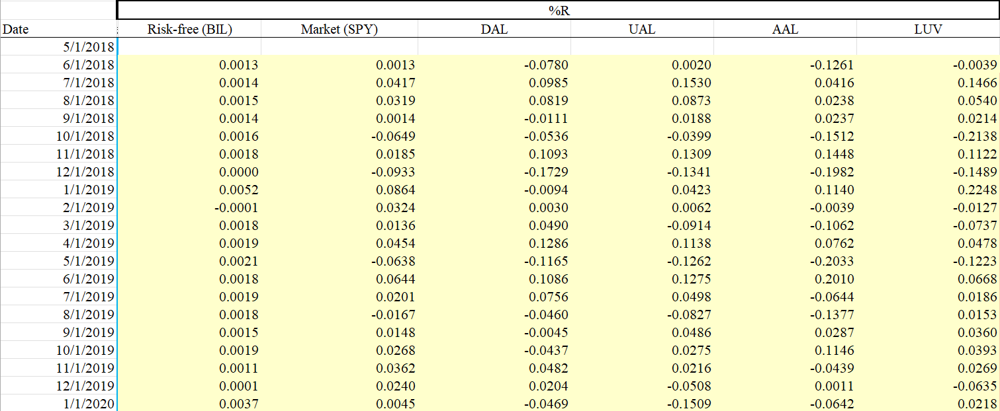
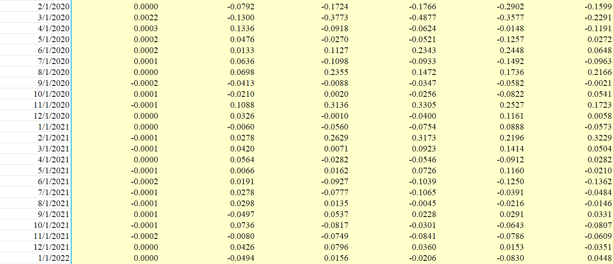
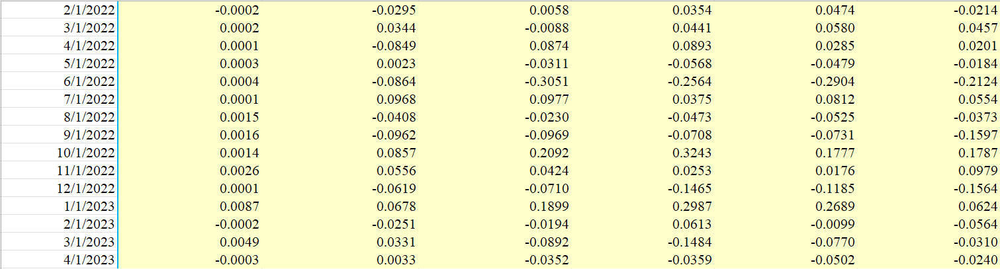
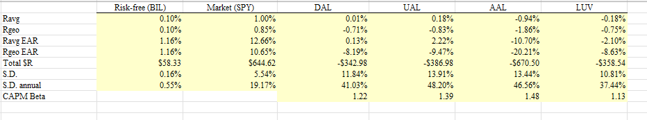
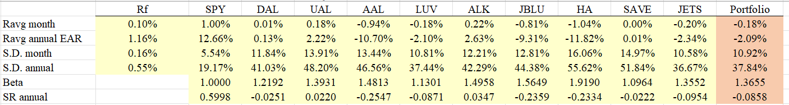
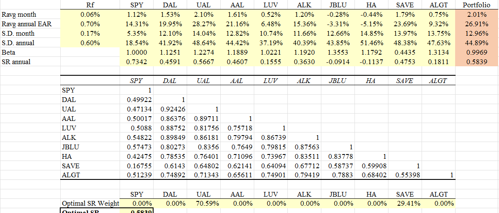
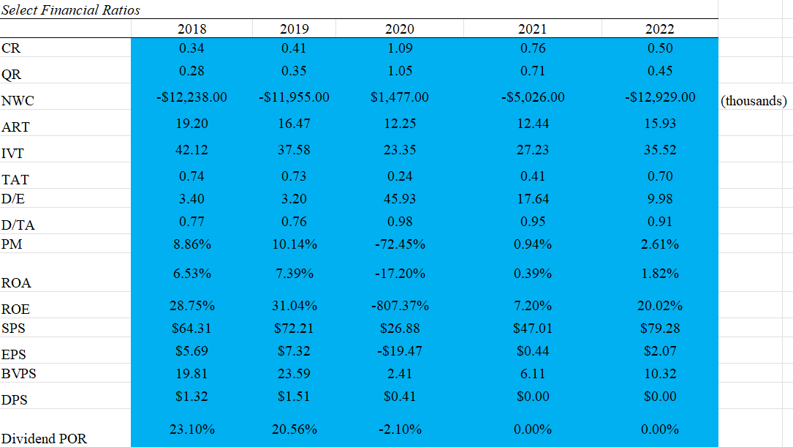
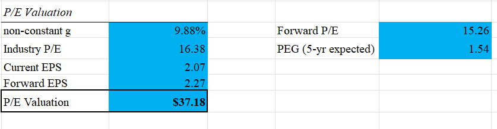
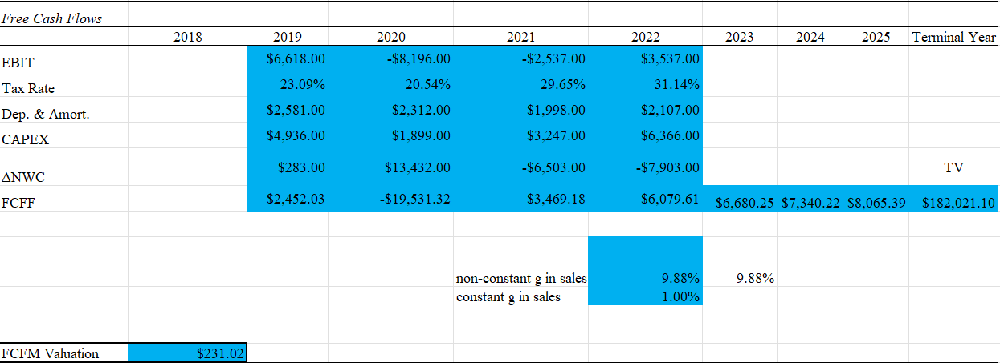
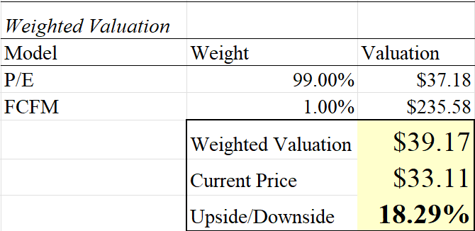

Delta Airlines, inc. [Ticker: DAL] is a US airline based in Atlanta, Georgia. Founded in 1925, Delta is one of three legacy full-service network passenger air carriers in the United States, along with competitors United Airlines and American Airlines. As of December 2022, Delta operates more than 4,000 daily flights to over 275 global destinations.
About 80% of Delta’s revenue arises from passenger fares. Other revenue streams include its cargo operations, loyalty program, vacations division, and credit card partnership. Its most important market segment is the domestic market, with a particular focus on higher-margin premium products offered to business travelers, such as Delta One and Comfort+.
Delta is a member of the Skyteam Alliance, which affords it important partnerships with Korean Air, Virgin Atlantic, and AirFrance/KLM, which help bolster its international reach. The company has approximately 90,000 employees.
Investment Decision
I give Delta Airlines a hold rating. It has strong fundamentals for an airline and some room for growth, but it is still difficult to predict the trajectory of the industry in the post-COVID world. At a weighted valuation of $39.17, there is some strong upside potential the stock today, but Delta has historically been a risky asset, so that return might not be large enough to justify the purchase. Keep in mind the following:
- Travel is among the first industries to see lower revenues during economic recessions. The current economic situation is precarious and could lead to industry losses.
- Rising fuel prices and pilot shortages are keeping Delta’s costs high, squeezing profits.
- Delta, like most airlines, is highly leveraged. Additional fundraising could be expensive, especially in the current high interest rate climate.
Industry Analysis and Competitive Positioning
More than most other industries, the airline industry faced significant struggles during the COVID-19 pandemic. Global air traffic fell from 4.7 billion passengers in 2019 to 1.8 billion in 2020. However, demand recovery has been surprisingly strong. 2022 saw over 3.7 billion passengers, roughly on par with 2017. Delta, United, American, Southwest, and Alaska have each returned to at least some level of profitability.
Competitive Rivalry - High
The airline industry is highly competitive. There is little differentiation between Delta and its main competitors, United and American. United Airlines is based in Chicago, Illinois. American Airlines is Based in Dallas, Texas. Both have similar positioning to Delta, targeting the business and premium leisure traveler. If a traveler lives in a city with air service from all three, they will likely choose their flight based on price alone, unless they are a member of a loyalty program for one of the airlines. This creates pressure to lower prices. On the most competitive routes, airlines are likely to match the prices of their competitors. Margins can be quite slim.
The rise of budget airlines has also put downward pressure on prices. Carriers like Southwest, Frontier, and Spirit Airlines offer fares at fractions of those of legacy carriers, drawing the most price-sensitive customer segment, the leisure traveler, away from traditional carriers. This has prompted legacy carriers to invest more into improving their premium products, which appeal to less price-sensitive customers.
Threat of Substitution - Low
In general, the airline industry in the United States does not face much threat of substitution. In the US, cars, trains, and buses cannot reach the same distance as a plane in similar amounts of time and comfort. One exception would be between two regional cities, especially on the Eastern seaboard. If two cities are close enough to drive within half a day or so, price-sensitive travelers might opt to drive rather than fly.
Supplier Power - High
The vast majority of the aircraft purchased by major airlines is produced by either Boeing or Airbus. This grants them considerable pricing power. In addition, pilots are typically trained on one aircraft type or another, constraining airlines to purchase a portfolio of aircraft that matches the training of their pilots, as retraining is time-consuming and expensive. This to aircraft producer industry power.
Airlines can negotiate for better prices, especially with a manufacturer with which it has a good relationship. Delta, for example, has historically had a strong relationship with Airbus. United Airlines’ recent order of 100 Boeing jets likely came with a substantial discount off the sticker price.
Other suppliers, such as those for fuel and food, have much lower pricing power because their products are highly commoditized and can easily be sourced from a wide variety of suppliers. If an airline’s current supplier for these products offers an unsatisfactory product or price, the airline can quickly sign a contract with another supplier that offers a better deal.
Buyer Power - Low
As a consumer-facing business, an airline’s prices are not easily influenced by individual customers. Individual passengers do not have the ability to negotiate fare prices with airlines. Prices are largely determined by complex algorithms and usually increase as the date of the flight nears. Large corporate customers, on the other hand, develop strong relationships with their preferred airlines and are often given substantial discounts on fares for business travel.
Threat of New Entrants - Medium
The airline industry is highly capital-intensive and logistically difficult. This serves as a deterrent to market entry. However, mechanisms like aircraft leasing can reduce the capital requirements for starting an airline. New airlines (mostly of the low-cost variety) are started fairly frequently. For example, two new budget airlines, Avelo and Breeze, were started in 2021 and have small but growing networks, largely consisting of leased aircraft.
However, regulatory requirements make the process of starting an airline incredibly difficult. In addition, airports have a limited number of slots available, which can limit expansion opportunities. It is widely speculated that budget airline jetBlue offered to purchase competitor Spirit Airlines partly in order to have access to its airport slots on the West Coast, since those are critical inputs to airline expansion.
Delta's Competitive Positioning
Strengths
Delta consistently ranks highest in customer satisfaction among US airlines. Its customer experience, with free In-flight entertainment and the newest addition of free Wi-Fi on domestic flights, is better than any of its competitors. Assuming equal prices, most consumers would likely choose Delta over other legacy carriers.
Delta has a strong hub network, with fairly even distribution across the United States. Passengers across the county can easily find themselves on a Delta flight. Its fortress hub in Atlanta frequently ranks as the busiest airport in the world.
Delta’s credit card partnership with American Express is critical to its business and drives customers into its loyalty program. Delta Skymiles is the most valuable airline loyalty program in the world, with an estimated value of $23.7 billion.
Weaknesses
Delta’s 10-K indicates that it does not use hedging when it purchases fuel, leaving it vulnerable to sharply increasing costs when oil prices rise. Hedging with forward/futures contracts in the future could help the company eliminate some price risk.
The entire airline industry is facing a pilot shortage, and Delta has been affected. This workforce issue is more threatening than most, because pilots require lengthy and expensive education programs in order to qualify to fly a commercial aircraft. Recent pilot contracts included a substantial price hike.
Macroeconomic Environment
The macroeconomic outlook for the airline industry has improved alongside the COVID recovery but is still quite rocky. Travel-related industries are typically the first to suffer during an economic downturn. Business travel is the bread and butter of full-service carriers like Delta and has recovered significantly since the pandemic, but has begun to struggle once again as large corporate customers reduce staffing and cut back on unnecessary expenses.
In addition, fuel prices are a key factor that affects airline profits. According to Delta’s 10-K report, it purchases the majority of its fuel using contracts to buy fuel at market prices. This means that the company is particularly vulnerable when oil prices are high, as they are now, which would constrain its margins. Much of the increased cost can be passed to the consumer in the form of higher fares, but this could deter potential passengers from flying.
Monetary Policy
Airlines are typically debt-intensive companies, and Delta is no exception. In the current high-interest rate climate, the company may find new debt it might wish to take out to be prohibitively expensive. Looking back, it was wise for the company to take out debt during times of low-interest rates, but it may have difficulty securing affordable financing in the current climate.
Monetary policy also impacts Delta indirectly in that it shifts demand for air travel. As monetary policy tightens, the economy slows down and fewer businesses and consumers will feel that they have the money to afford travel. Since travel is often seen as an unnecessary or discretionary expense, it is usually among the first costs to cut in an economic slowdown. In contrast, airline profits typically boom during times of quantitative easing. They can be among the most profitable businesses during these times. However, margins are inconsistent across time.
Fiscal Policy
Airlines took advantage of significant subsidies to stay afloat during the pandemic, but those subsidies faded away shortly after the pandemic began. The federal government places high taxes on passenger fares, largely to fund airport security and air traffic control services.
More recently, Delta and its competitors are indirectly benefitting from a bipartisan infrastructure bill to fund airport infrastructure. Particularly large investments are being made in many of Delta’s hubs, such as Atlanta, Minneapolis, and Salt Lake City.
Investment Risks and Returns
Percent Returns
  Average Monthly Returns
Over the time frame of May 1, 2018 and April 1, 2023, the arithmetic average monthly return on Delta Airlines shares was 0.01%. By comparison, the average market return was 1% over the same time period. Delta had an average geometric return of 0.71%. The market’s average geometric return was 0.85%.
The arithmetic effective annual rate for Delta was 0.13%, while the geometric effective annual rate was -8.19%. By comparison, the market EARs were 12.66% and 10.65% respectively.
Standard Deviation
The standard deviation of Delta’s monthly returns was 11.84%. For annual returns, it was 41.03%. By comparison, the standard deviation of monthly market returns was 5.54%, while for annual returns it was 19.17%.
CAPM Beta
Since Delta stock prices are more variable than those of the market, its CAPM beta is 1.22.
Comparative Firm Analysis
Delta’s poor returns relative to the market are mirrored by its competitors. Not a single one of the Big Four Airlines had positive returns from May 2018 - March 2023, largely driven by the COVID-19 pandemic. Share prices across the industry have somewhat recovered, but have stagnated over the past year, meaning they have yet to reach pre-pandemic levels.
Portfolio Analysis
As seen in the above figure, the Sharpe Ratios for Delta and its competitors are negative or near zero over the last five years. This means that none of these airlines would be found in a mean-variance optimal portfolio. Risk-adjusted potential returns are far higher in the broader market. Once again, this is likely due to the rapid price decline the industry experienced during the beginning of the COVID-19 Pandemic.
Using prices from May 2020 - April 2023 to eliminate the freefall that occurred in March and April 2020 alongside eliminating SPY from the analysis places the entirety of the portfolio into United Airlines and Spirit Airlines. United has the highest Sharp Ratio. It’s reasonable to assume that Spirit’s high ratio was driven by jetBlue’s acquisition attempt.
Stock Analysis
Financial Ratios
Delta’s Debt to Equity Ratio is particularly notable. Clearly, it was forced to take on significant amounts of debt in 2020, but it has done an excellent job of paying it down over the succeeding years. Profit margins are still much lower than they have been in previous years, but they are recovering.
Income Generation
Delta has not paid a dividend since the pandemic, and it is unclear when it will resume payments. It will likely take a few more years for profit margins to rise enough to continue paying them. Given this uncertainty, it would be unwise to use dividend projections to value the company.
P/E Valuation
This P/E Valuation places Delta’s value per share at $37.18, which has about 7.3% upside compared to the current price of $34.64 as of EOD April 20, 2023. This is good news for anyone holding Delta, but not likely enough to entice someone to buy it today. The non-constant growth rate of 9.88% is the average annual sales growth the company has experienced since 2001.
Discounted Free Cash Flow Valuation
This Free Cash Flow valuation of Delta Airlines doesn’t yield valuable information. It estimates that Delta’s value is several times the current price. The unpredictable, low margin business of airlines makes it difficult to value them in traditional ways. Growth will be slow in the future and will go up and down over the years. Given that Delta’s share price has never touched $70, I won’t be weighting this valuation at more than 1% during the weighted valuation below.
Weighted Valuation
In this weighted valuation, I value Delta Airlines stock at $39.17 per share, which is about 18.29% above the current price of $33.11 as of EOD April 25, 2023. This upside is attractive, but given the inconsistency of cash flows and share prices of airlines, it could take quite some time for this value to be realized in the market.
Environmental, Social, Governance
Airlines are in a carbon-intensive industry and are increasingly under pressure to reduce their carbon emissions. Delta has repeatedly stated that it is pushing toward making its business carbon-neutral. Efforts that Delta is taking include purchasing more fuel-efficient aircraft, investing in sustainable aviation fuel, and selecting suppliers based on their environmental prudence. Delta is taking strong steps to make its business more environmentally sustainable, despite the difficulty of doing so in the aviation industry.
Delta takes its employee relations very seriously. It engages in an industry-leading profit-sharing program, incentivizing employees to ensure the company succeeds. In addition, Delta’s 10K states that they have put programs in place to:
- “Reward our people through highly competitive total compensation designed to share Delta’s success with our employees who make it possible and promote teamwork and collaboration across the business."
- “Achieve high performance by fostering our people’s holistic wellbeing including physical, emotional, social and financial wellbeing.”
- “Drive employees’ professional and community engagement.”
- “Prepare our employees for key roles and future leadership positions through a variety of training and development programs.”
- “Enhance our culture through efforts aimed at making our workplace more engaging, equitable and inclusive.”
These initiatives help Delta employees feel included and valued by the company. Delta is a company that understands its social responsibilities and takes care to fulfill them.
Behavioral Finance
In an effort to avoid bias affecting my analysis of the company, id like to give an overview of any factors that could influence my thought process.
- I am a former shareholder of Delta Airlines. It's possible that my current analysis could be influenced by the analysis I conducted when I first bought or sold the shares, whether that be in a positive or negative way.
- I am a frequent Delta Airlines customer. I live near one of Delta’s hub airports and use the airline about 90% of the time that I fly, so it’s possible that I have an overinflated sense of the company’s position in the industry.
- I am interested in the aviation industry as a potential career field. This could influence my perception of the industry more broadly.
Conclusion
Delta Airlines is a strong company in a difficult industry. It has recovered strongly since the COVID pandemic but faces difficulties in the form of monetary tightening and a coming recession. With a weighted valuation of $39.17, I give Delta Airlines a HOLD rating. It has perhaps the strongest market position in the industry, but slowing demand from its core business travel segment could continue to constrain margin recovery. It certainly isn’t a bad company, but the airline industry is one of inconsistent profits and intense competition, so the potential value in the trade may not be realized soon.